Pix32 v5¶
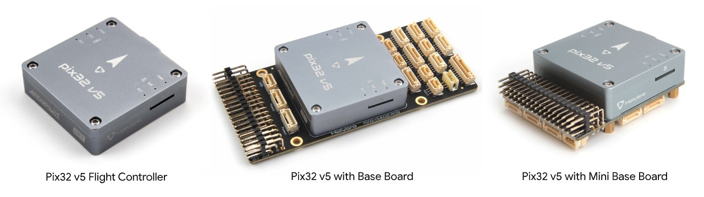{kind=link}
System Features¶
HolyBro Pix32 v5 is a new autopilot developed on the base of FMUv5 scheme, which can be regarded as a variant version of ‘Pixhawk4’.
The Pix32 v5 is comprised of a separate autopilot and carrier board which are connected by a 100pin connector. It is designed for those pilots who need a high power, flexible and customizable flight control system.
Holybro offers two variations of the carrier board, including an ultra compact “Mini” version.
Manufacturers can design carrier boards to suit their specific needs.
Specifications¶
- Processors
32 Bit Arm Cortex-M7 ® , 216MHz, 2MB memory, 512KB RAM
32 Bit Arm Cortex-M3 ® IO co-processor, 24MHz, 8KB SRAM
- Sensors
Accel/Gyro: ICM-20689
Accel/Gyro: BMI055
Mag: IST8310
Barometer: MS5611
- Interfaces
8-16 PWM servo outputs (8 from IO co-processor, 8 from main cpu)
3 dedicated PWM/Capture inputs
Dedicated R/C input for CPPM
Dedicated R/C input for Spektrum/DSM and S.Bus
Analog/PWM RSSI input
Dedicated S.Bus servo output
- 5 general purpose serial ports
Two USARTs with full flow control
UART1 port on carrier board 5V supply capable of 1.5A current limit
3 I2C ports
- 4 SPI buses
1 internal high speed SPI sensor bus with 4 chip selects and 6 DRDYs
1 internal low noise SPI bus dedicated for Barometer with 2 chip selects, no DRDYs
1 internal SPI bus dedicated for FRAM
Supports dedicated SPI calibration EEPROM located on sensor module
1 external bus
Up to 2 CANBuses for dual CAN with serial EEPROM
Each CANBus has individual silent controls for ESC RX-MUX control
Analog inputs for voltage/current from two battery monitors with two additional analog inputs
- Voltage Ratings
Power module input to autopilot: 4.9~5.5V
Maximum input voltage: 6V
USB Voltage Input: 4.75~5.25V (supplies voltage to all carrier board 5V outputs, limited to USB current source’s capability)
Servo Rail Input: 0~36V; servo rail isolated from other internal components and requires its own supply)
- Mechanical Data
Dimensions: 45mm x 45mm x 13.5mm
Weight: 33.0g
UART Mapping¶
SERIAL0 -> USB
SERIAL1 -> UART2 (Telem1)
SERIAL2 -> UART3 (Telem2)
SERIAL3 -> UART1 (GPS)
SERIAL4 -> UART4 (GPS2, marked TEL4/GPS2)
SERIAL5 -> UART6 (Telem3)
SERIAL6 -> UART7 (spare, debug)
Carrier board pin assignments¶
This section details the pin assignments of the standard and mini carrier board. OEMs can design their own carrier board, as needed for specific requirements. Design schematics, module connector and pinout, 3D printer files, etc. are located here.
Note
VDD_5V_RC is provided when either the USB or Power Module supply is attached. The power module will supply all 5V outputs except the VDD_SERVO which should be provided from a separate source, like an ESC or standalone BEC.
Standard¶
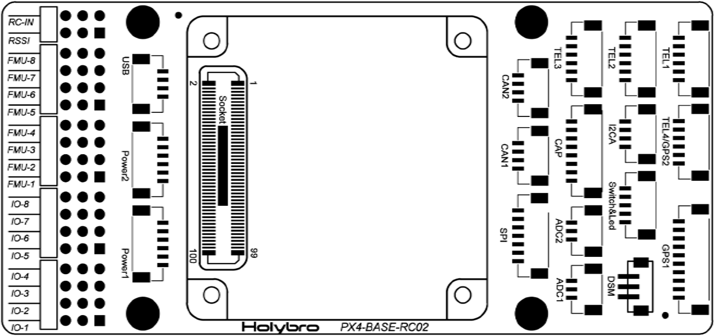 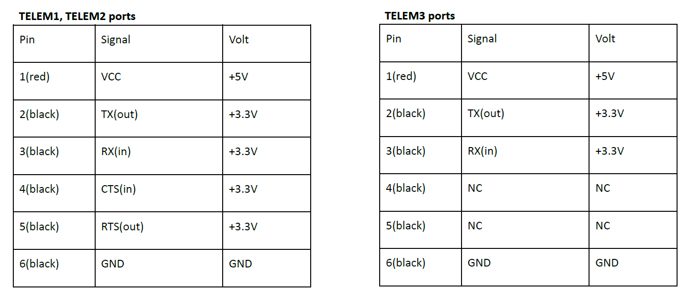 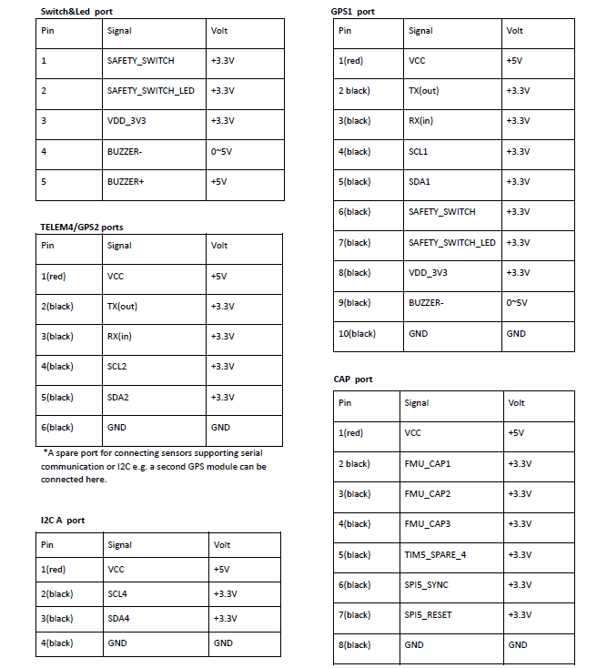 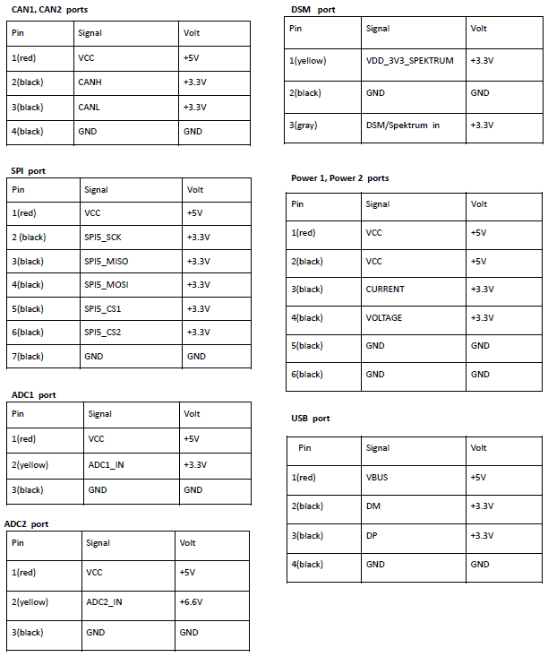 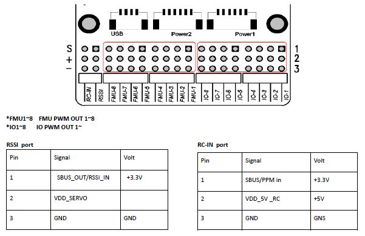{kind=link}
{kind=link}
{kind=link}
{kind=link}
{kind=link}
Mini¶
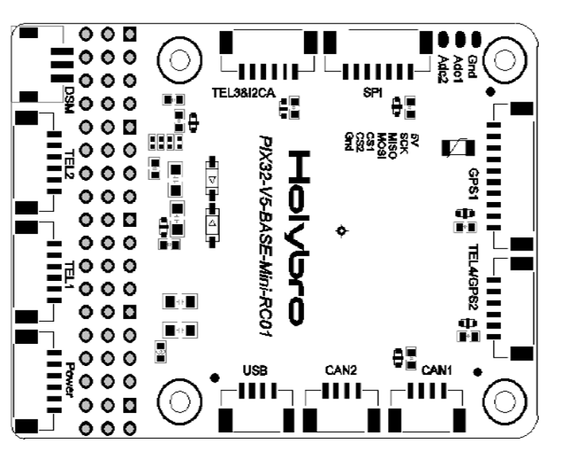 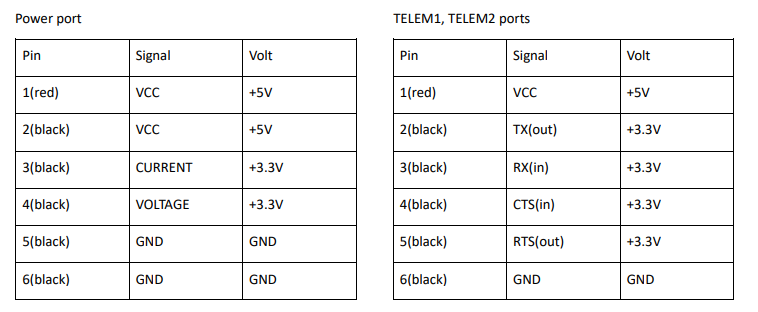 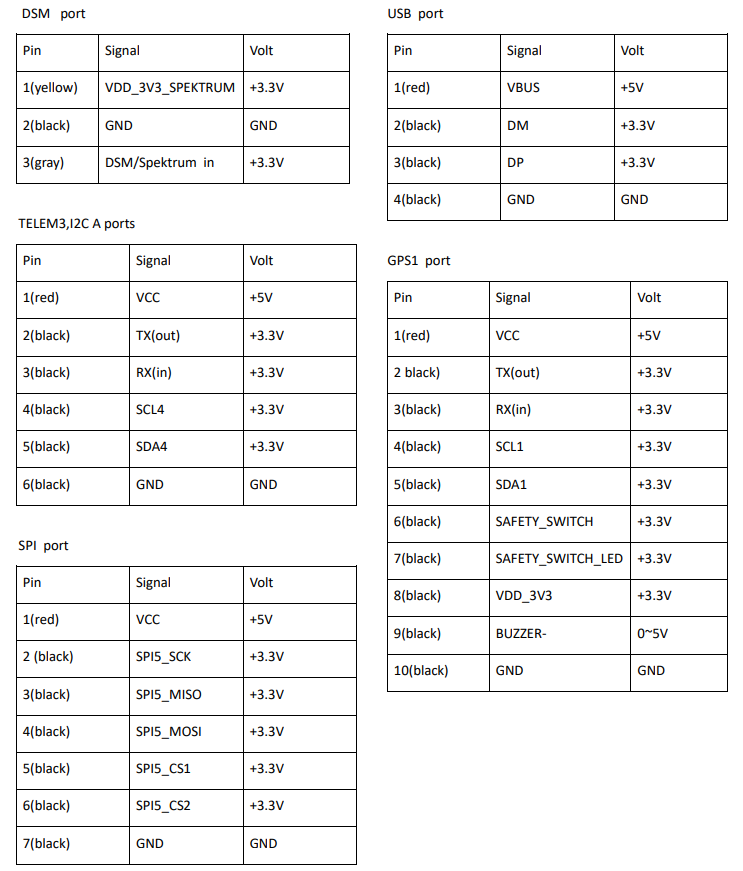 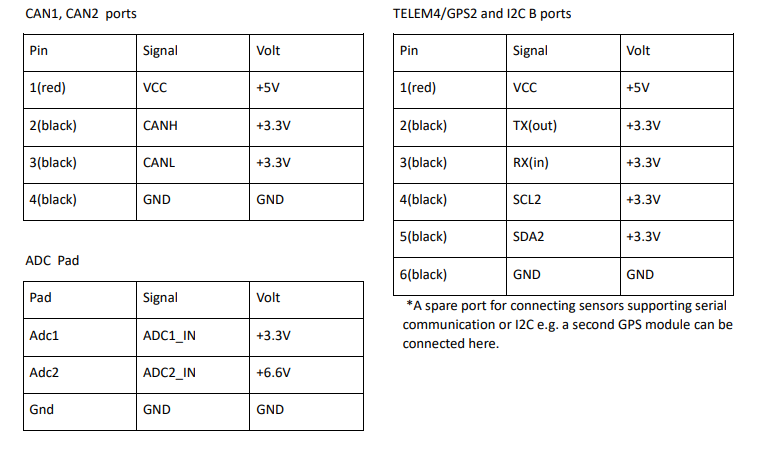 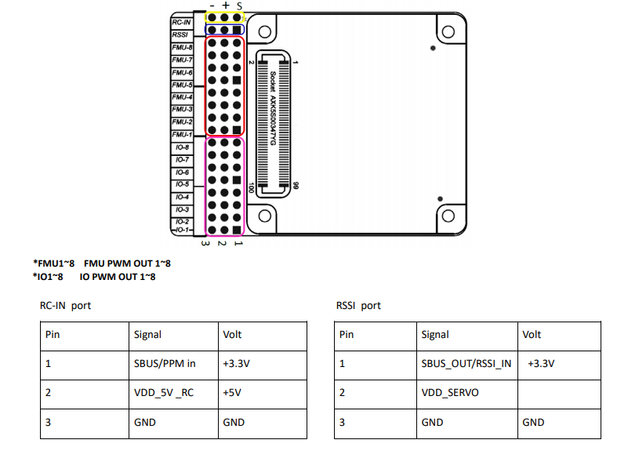{kind=link}
{kind=link}
{kind=link}
{kind=link}
{kind=link}
Where to Buy¶
Holybro .
[copywiki destination=”plane,copter,rover,blimp”]